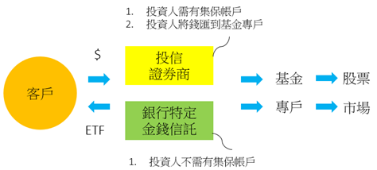

ETF小百科
解析ETF裡的4W
What：何謂ETF
ETF（Exchange-Traded Fund)是可以在交易所交易的基金，在交易所正式的名稱是「指數股票型基金」，拆解成三部分更能理解此項商品的特色。
指數：
「被動」追蹤某一指數表現，是一項指數化投資的商品
股票型：
跟股票一樣可以在集中市場掛牌交易
基金：
由投信公司管理並發行受益憑證做為投資人持有資產的表徵，方式類似共同基金
因此，ETF是被動追蹤某一指數表現的共同基金，投資組合盡可能比照指數成分股，且在集中市場掛牌，如同一般股票的交易買賣。
ETF三大特性
特性1：被動管理、追求指數報酬率
ETF投資組合被動地依照所追蹤指數的組成成份股與權重來建立，因此ETF的報酬率貼近追蹤指數之報酬率。
| 主動式基金 | 主動式基金(ETF) | |
|---|---|---|
| 績效目標 | 擊敗加權指數 | 貼近追蹤指數 |
| 管理費 | 高 | 低 |
| 持股透明度 | 依各基金管理公司揭露程度而定 | 貼近指數持股與權重，透明度高 |
| 風險分散程度 | 依據經理人操盤風格而異 | 高 |
| 指數連棟興 | 低 | 高 |
特性2：同時具備股票、基金之特色
ETF是由投信公司發行管理之基金，但買賣的方式如同股票，投資人只要有股票交易帳戶，就可在次級市場買賣、進行融資融券交易，價格也取決於市場供需。
| 被動式基金(ETF) | 股票 | |
|---|---|---|
| 追蹤標的指數 | 有 | 無 |
| 風險分散 | 有 | 無，除非一次買進大量股票 |
| 風險分散機率 | 較低(千分之一) | 較高(千分之三) |
| 信用交易 | 可 | 可, 但有限制 |
| 平盤以下放空 | 可 | 不可 |
| 研究各股 | 不用 | 要 |
特性3：實物申購、買回機制
ETF可於初級市場進行實物申購、買回，亦即投資人可透過參與證券商以一籃子的股票，來與ETF的基金管理人對價交換受益憑證，反之，也可以持有的受益憑證對價交換一籃子股票。
ETF類型
股票ETF：主要投資於股票市場。
以投資區域可畫分成：
- 全球型：包括全球各區域或是跨區域的ETF。
- 區域型：包括：北美、拉丁美洲、歐洲、新興歐洲、紐澳、亞洲、中東等ETF。
- 單一國家型，包括：美國、墨西哥、巴西、俄羅斯、中國、印度、泰國、印尼、越南、台灣等各個國家。
- 以產業類別：還可以分為金融、科技、醫療、消費、能源、公用事業、房地產、電訊、營建、航運等各種產業ETF。
債券ETF：主要投資於各種類債券。
以投資等級可畫分成：
- 公債、投資級公司債和高收益債ETF。
若以投資標的來看：
- 還有新興市場債ETF、資產抵押債ETF、可轉債ETF、通膨指數債券ETF等。
匯率ETF：主要連結匯率或相關指數。
- 連結「單一貨幣」，包括：美元、英鎊、歐元、日圓、紐幣、人民幣、印度、俄羅斯、巴西、南非等貨幣ETF。
- 連結「一籃子貨幣」，包括：十大工業國貨幣指數ETF。
商品ETF：主要投資於商品原物料市場。
- 商品ETF：綜合原油、貴金屬、基本金屬、農產品等原物料的ETF。
- 能源ETF：包括：石油、天然氣等ETF。
- 貴金屬ETF：包括：黃金、白銀和鈀金等ETF。
- 工業金屬ETF：包括：基本金屬、銅、鎳等ETF。
- 農產品ETF：包括：綜合農產品、牲畜商品。
解析ETF裡的4W
Who：誰適合投資ETF
- 一般共同基金的投資人：
平時就有在投資共同基金的投資人，除了主動式操盤的基金標的，當投資人看好某一投資市場或產業時，即可佈局追蹤參與含括該投資市場或產業指數的指數型基金。 - 覺得股票投資成本太高的投資人：
熱衷於短線交易的投資人，在買賣個股時需要支付一定的成本，而指數型基金的證交稅指有股票的1/3，可以為此類投資人省下可觀的費用。 - 總是聽說隔壁王媽媽買了哪支股票就跟進的投資人：
不懂產業發產趨勢也無法進行個股分析語言就，因此，只能依據身邊人的口碑來買賣的投資人，因此僅需依據指數型基金的高低點判斷進場時點，即是非常適合這類投資人的金融產品。 - 有避險需求的投資人：
過去以「現貨、期貨」買賣來避險的投資人，現在還可以透過「現貨、指數型基金」來避險
解析ETF裡的4W
Why：投資ETF三大優勢
優勢1：荷包省
因ETF無須龐大的投研團隊來從事相關分析，而是依據追蹤指數的持股與比重來建立商品的投資組合，因此，ETF的管理費遠較一般的共同基金低。即使與股票相較，ETF的交易稅也比一般股票的交易稅省了三分之二。
優勢2：便利買
投資人可在股票交易時間內，隨時透過證券商下單，此外，ETF買賣價格的升降單位固定，投資人可輕易掌握預估報酬及風險。
優勢3：風險低
由於申購ETF等於讓投資人一次買進一籃子績優股，投資風險較各股的買賣低，投資人也不必受限於資金不足而不能申購多檔股票，有效分散投資風險。
解析ETF裡的4W
HoW：如何申購ETF
指數型基金的申購依據基金掛牌上市前後，共有二種申購方式：
- IPO(基金掛牌上市前)以現金申購 / 初級市場
過去由於指數型基金的申購門檻較高，使得許多非機構投資人無法參與ETF初級市場的造市機會，而目前主管機關已經核准小額投資人可以在指數型基金上市前，即以現金向發行該基金的投信公司或銷售機構提出申購，惟參與最低金額門檻較高。  - 次級市場
指數型基金掛牌上市後，即可透過集中交易市場買賣。由於初級市場的參與門檻較高，因此對於一般投資人而言可以等基金掛牌上市後直接在集中市場買賣指數型基金，交易方式和股票買賣完全相同；此外，也可透過銀行等銷售機構進行單筆申購或定期定額申購。